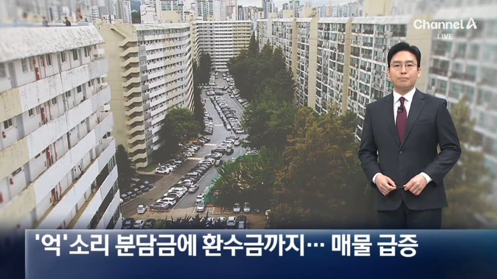
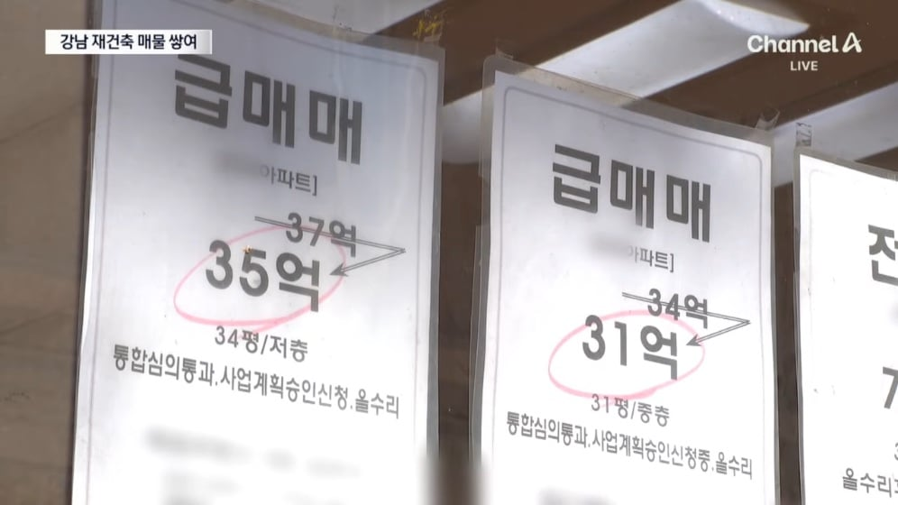
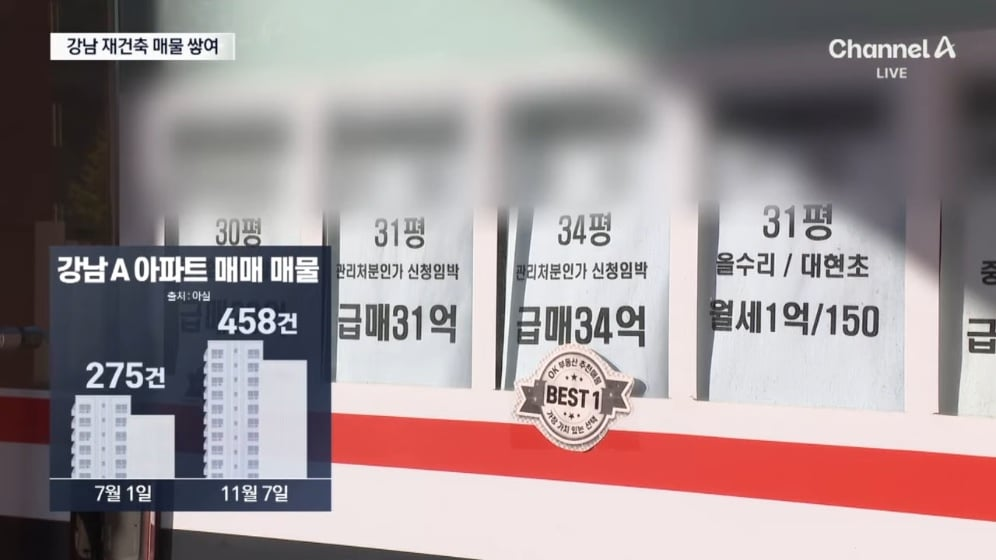
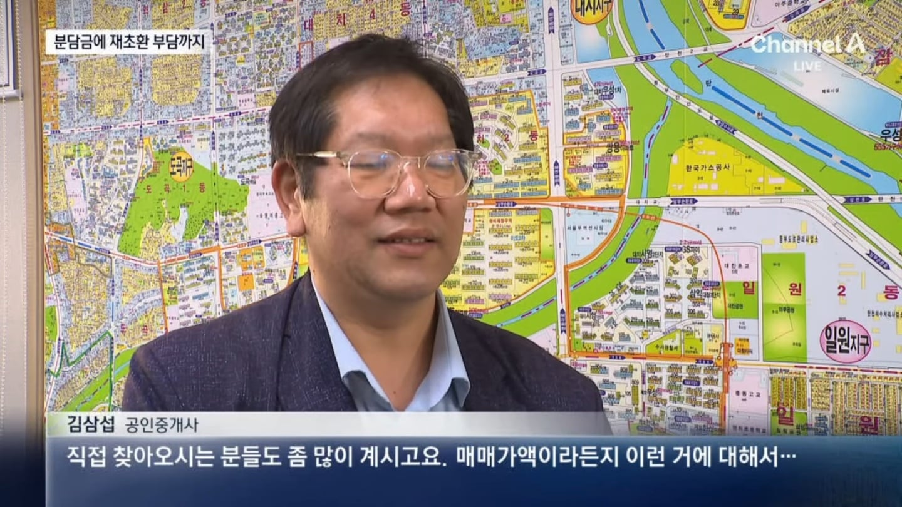
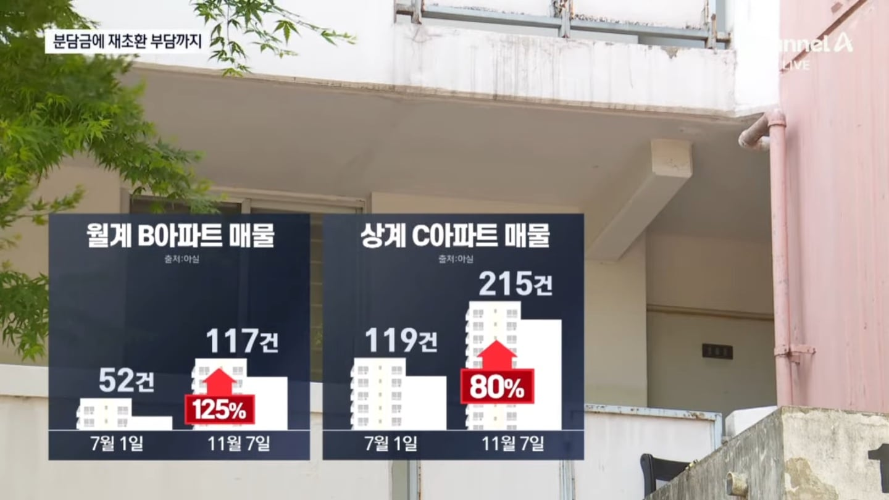
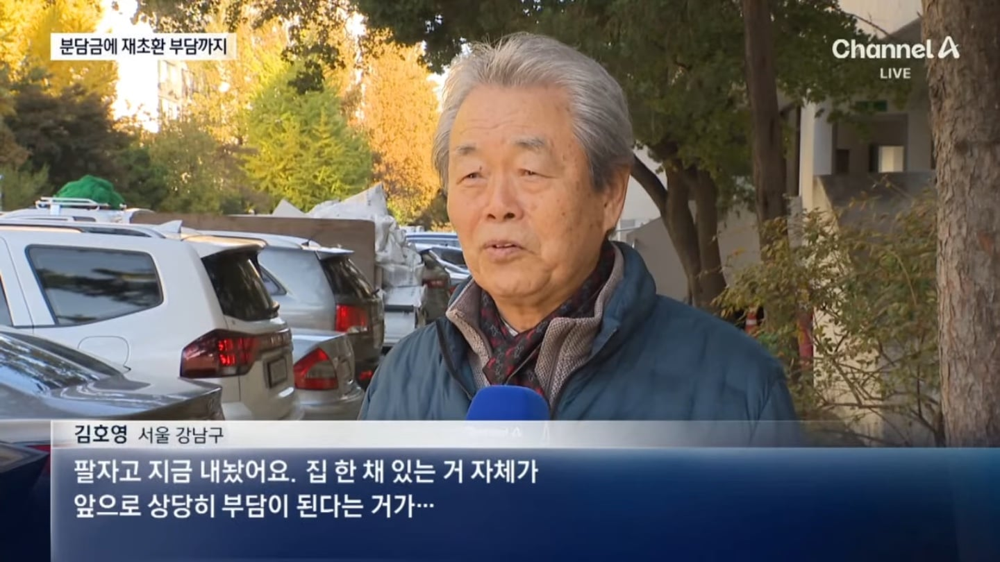

자산 개념이 같건 다르건 그냥 떼자하면 떼겠지
왜 옳게된 세상 아니였나?ㅋㅋ
누구보다도 환영할만한 사람들이 많을텐데
집 가지고 있는것보다 임대로 살게해야 지지율 낭낭하지ㅋ
8억짜리가 10년동안 35억이 되었다
재건축비용 4.3억 환수금 4.6억
얼마나 더 벌어야 억울하지 않을까?
분당금이 초기 비해 얼마나 더 오를지 알수없지
30억짜리 팔면 ㅅㅂ ㅋㅋ
평생 호화 유람선에서 VIP 룸에서 유유자적 살수 있는거 아니냐
주식이랑 부동산은 자산 개념이 다를껄? 부동산에 세금을 더떼고 그런게 인프라 이용에 뭐 어쩌고해서 다르다고 경제학에서 그랬는데 자세히는 기억은 안나는데 그럼